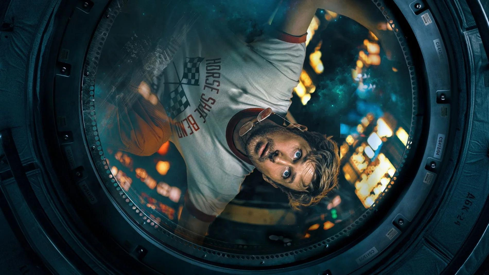
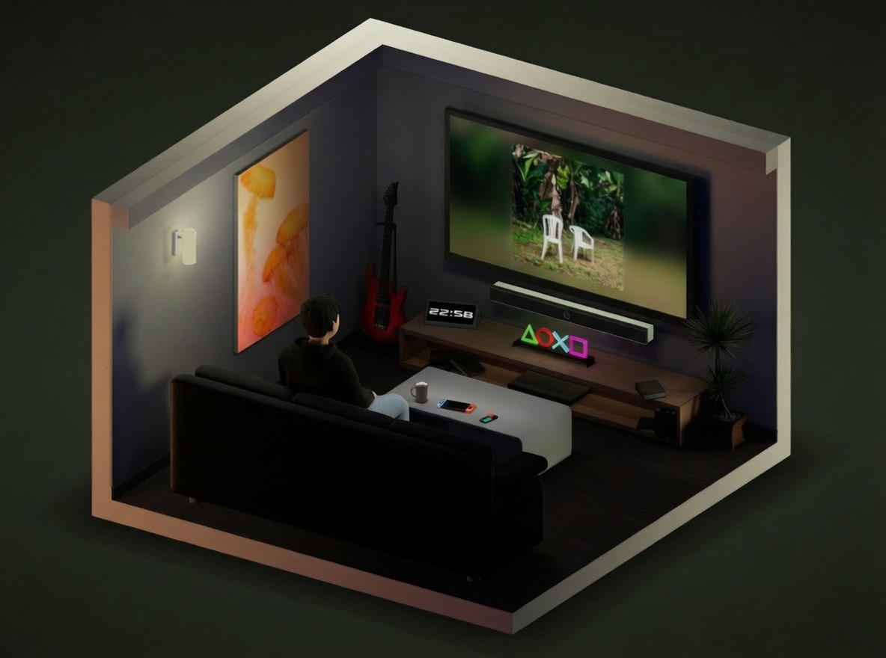
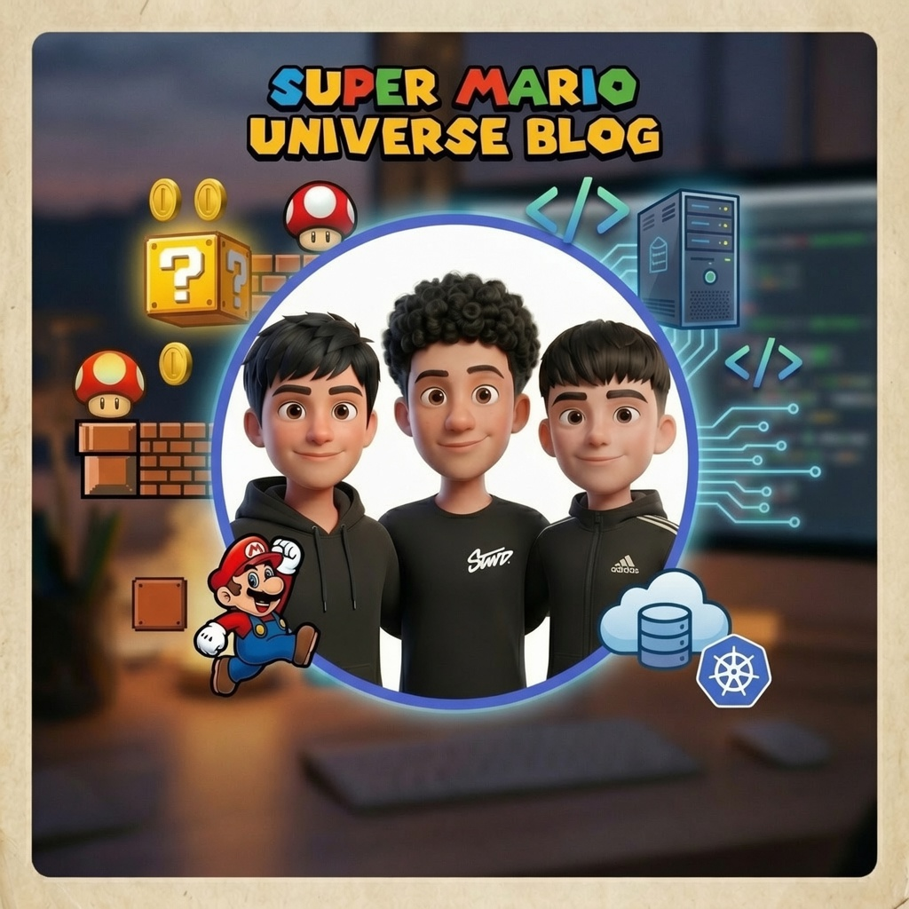

Disseny Web
El professor de ciències Ryland Grace es desperta sol en una nau espacial sense recordar qui és i ha de descobrir la seva missió de supervivència.
Web
Veure
projecte →
Welcome to my
Portfolio Website
// Available for internships
Junior Programmer _
Estudiant de Sistemes Microinformàtics i Xarxes a Bemen-3. Apassionat per la informàtica, organitzat i amb facilitat per tractar amb la gent.

more ↓
// A short technical biography
Hello! My name is Gabriel Daniel Vasquez Hinojosa. Born in Barcelona on 09/09/2004, with Spanish and Bolivian nationality.
Student of Microcomputer Systems and Networks (SMIX) at Bemen-3. Responsible, punctual and organized, with attention to detail.
I work well with others, stay calm under pressure, and learn new tools quickly. My goal is to study Cybersecurity in the future.
"Simplicity is the ultimate sophistication."
// Formació, experiència i habilitats
Hardware, xarxes, sistemes operatius i desenvolupament web.
Atenció a convidats, gestió de trasllats i acreditacions.
Control d'accessos i vigilància general.
Demolició, fontaneria, electricitat i pintura.
// Projectes i competències tècniques

El professor de ciències Ryland Grace es desperta sol en una nau espacial sense recordar qui és i ha de descobrir la seva missió de supervivència.

Pàgina web de consultoria per a la reparació d'equips informàtics, amb un formulari de suport tècnic per sol·licitar assistència.
Vídeo demostratiu sobre com muntar i crimpar un cable de xarxa amb connector RJ45 funcional.

Configuració de perfils professionals i grups departamentals en màquines virtuals, amb assignació de permisos d'administració i sudoers.
Creació i muntatge d'un projecte audiovisual amb subtítols a partir de 4 imatges de referència.
Manual detallat per a la instal·lació i actualització d'aplicacions ofimàtiques i corporatives, interpretant especificacions tècniques pas a pas.

// Pitch professional sobre el portafoli
// Tens una idea, pràctiques o vols col·laborar? Escriu-me.
Posa't en contacte amb mi a través de qualsevol d'aquests canals.
@GitHub
gdvasquez-io